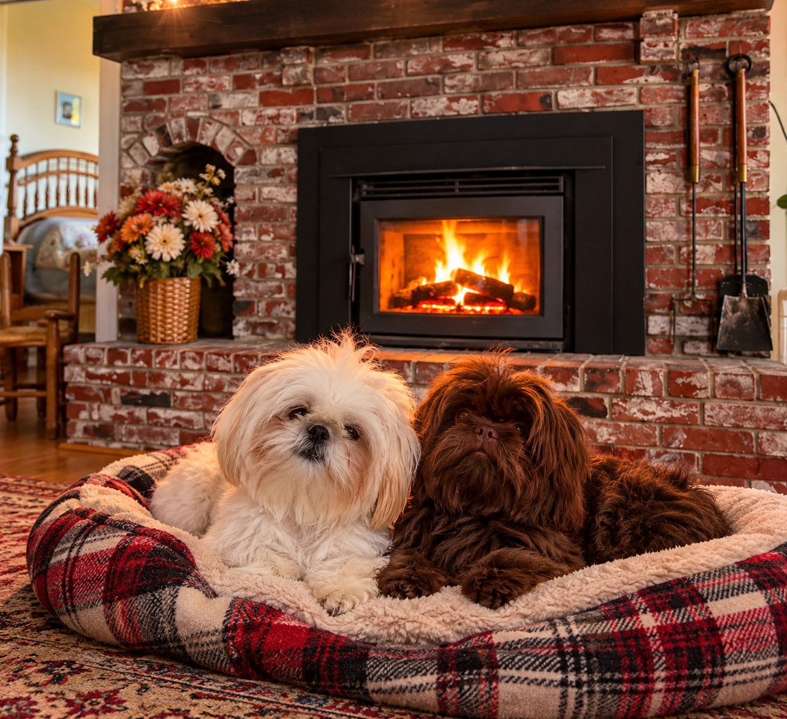

🍩 Christine Comes to Visit

It was a beautiful, crisp Maine morning when Boomer and Trixie suddenly heard a car coming up the driveway.
Trixie jumped up and headed for the window. “Someone’s here!”
Boomer was already there. “WOOF! WOOF! WOOF!”
Peg looked out the window and laughed. “Boomer, settle down. It’s Christine.”
Lou opened the door, and there stood their friend Christine with a big smile—and, more importantly as far as Boomer was concerned, two very interesting packages.
One was a box of fresh donuts. The other was a bag of dog treats.
Boomer’s nose immediately went to work. Trixie looked at him. “Boomer, don’t even think about it.”
Christine laughed. “Don’t worry, Trixie. I brought something for you two, too.”
After everyone said hello—and Boomer and Trixie each received a treat—Lou said, “Christine, come on. You’ve got to see the new wood carving out by the garden.”
Peg joined them, and everyone headed outside. Boomer and Trixie raced ahead, running back and forth along the path as Lou, Peg, and Christine walked toward the garden.
When they reached the new wood carving, Christine stopped. “Oh, Lou, that’s beautiful!”
They walked around it, admiring the details and talking about the garden. Boomer sat proudly beside the carving.
Trixie looked at him. “Why are you sitting like you made it?”
Boomer ignored her.
After a while, the chilly air started getting to everyone. Peg smiled. “Let’s head back. I’ll make some coffee.”
When they walked into the house, the room was warm and cozy. Lou put another log on the fire in the fireplace, and soon the flames were crackling and dancing behind the glass.
Peg headed into the kitchen to make a fresh pot of coffee while Christine opened the donut box.
That’s when Peg noticed Boomer. He was staring at the donuts.
“Boomer…” Peg warned.
Boomer looked away. For about three seconds.
Everyone sat down with their coffee and donuts while the fire crackled nearby. Trixie curled up comfortably, perfectly content after her treat.
Boomer, however, had developed a plan.
Christine had left her napkin beside her plate. And sitting on that napkin was a small piece of donut.
Boomer slowly moved closer.
Peg spotted him immediately. “Boomer, I see you.”
Boomer froze. He casually turned around as if he had simply been walking through the room.
A few minutes later, Peg became distracted pouring Christine another cup of coffee. This was Boomer’s opportunity.
He quietly crept toward the table. Closer… closer… his nose was almost there.
CLINK!
Boomer bumped the little table. Everyone turned around. Boomer froze with his front paws up and a guilty look on his face.
“BOOMER!” Peg said.
Boomer looked at Trixie. Trixie looked at Boomer.
Then Trixie suddenly jumped up and started barking toward the window. “WOOF! WOOF!”
Peg turned. “What is it, Trixie?” Lou and Christine looked toward the window too.
There was absolutely nothing there.
Meanwhile, Boomer quietly backed away from the table and sat down beside the fireplace like the world’s most innocent dog.
Trixie walked over and sat beside him.
Boomer whispered, “Thanks.”
Trixie gave him her familiar look. “You’re going to owe me.”
Peg turned back around and looked at the two of them. “I don’t know what you two are up to…”
Boomer immediately rested his head on his paws. Trixie did the same. Perfect angels.
Christine started laughing. “Peg, I think Trixie just bailed Boomer out!”
Lou laughed. “Those two are quite a team.”
Peg shook her head and smiled. “Yes—and that’s exactly what worries me.”
Soon everyone was sitting comfortably by the warm fire, drinking coffee, eating donuts, and talking about the garden and the new carving.
Boomer and Trixie curled up together nearby.
Trixie closed her eyes. Boomer leaned over. “Think there are any donuts left?”
Trixie’s eyes opened. “Boomer…”
And from across the room came Peg’s voice: “I heard that!”
Everyone burst out laughing. Boomer put his head back down.
There would always be another donut. And, fortunately for Boomer, there would always be Trixie to help keep him out of too much trouble.
THE END. ❤️🐾